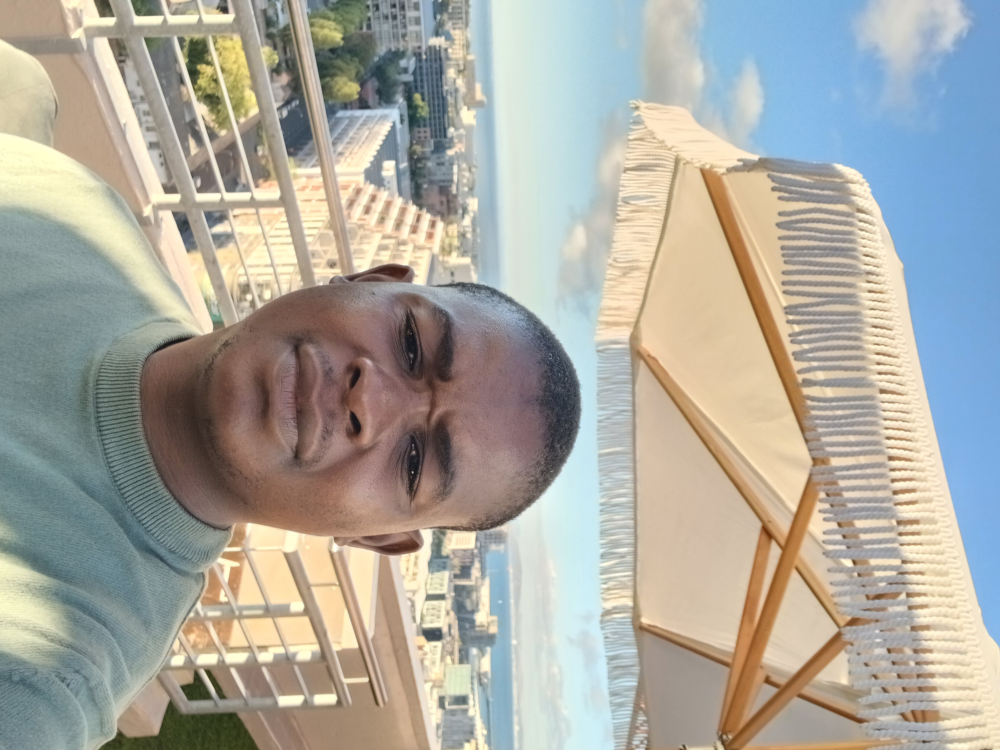

Rymond Madisha, founder of Internal Person, is driven by the vision of reconnecting humanity with its ancestral roots while guiding modern generations spiritually and personally. His mission is to integrate traditional wisdom, biblical concepts, and the Holy Spirit into a platform that accommodates all beliefs, cultures, and religions.
Through Internal Person, Rymond aims to create a holistic spiritual system that empowers individuals to understand their history, discover their purpose, and grow in personal and professional life. The platform provides access to rare spiritual books, structured reading guides, consultation sessions, and practical assignments, helping members align themselves with both ancestral and future wisdom.
Rymond’s passion is to ensure that everyone, regardless of belief or culture, can find a space to learn, reflect, and grow. Internal Person is the realization of his lifelong vision of combining tradition with innovation for spiritual and personal development.